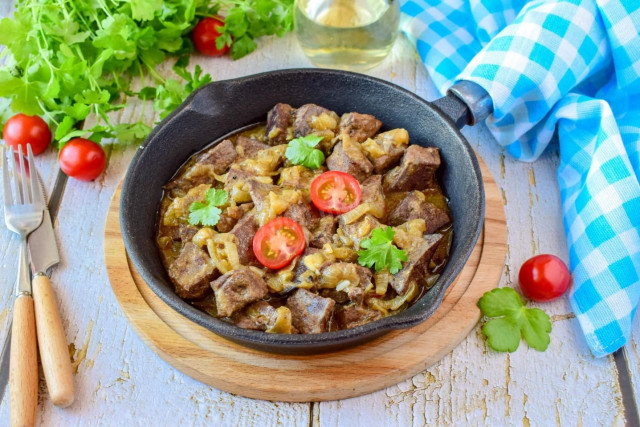

DISHES COOKED IN A FRYING PAN
In a frying pan you can cook a ton of delicious dishes, none of which will be like the other. Moreover, dishes can not only be fried, but also stewed, simmered, or baked. We have recipes for main courses, baked goods, hot appetizers, and delicacies for breakfast, lunch and dinner.

-
Beef liver
500 gr -
Onion
2 pieces -
Wheat flour
3 teaspoon -
Vegetable oil
20 gr -
Salt, pepper
To taste